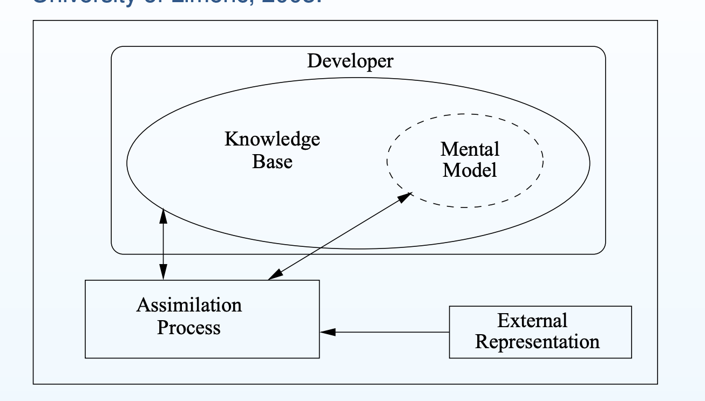

Defining Maintainability
The degree of effectiveness and efficiency with which maintenance activities can be carried out on the product. It includes these independent sub-attributes:
Comprehensibility (Analysability)
Degree of effectiveness and efficiency with which the implementation can be understood in order to conduct maintenance activities with confidence.
Alterability (Modifiability)
Degree to which a product or system can be effectively and efficiently changed without introducing defects or degrading existing product quality.
Testability
Degree of effectiveness and efficiency with which test criteria can be established for a system, product or component and tests can be performed to determine whether those criteria have been met.
Making a decision
To discuss and justify a decision: there should be:
- A decision criteria
- Consideration of other options, how are the alternatives not as good as your choice, based on the criteria.
Software Decision-Making criteria
- Time to first delivery (Buildability)
- Execution time (performance)
- Existing knowledge of development team
- Time before next failure (reliability)
- Uptime (availability)
- Total cost of ownership (Maintainability)
Comprehensibility
The more time and effort you need to put in to understand code well enough that you are confident enough to conduct maintenance activities the less comprehensible it is, therefore the less maintainable it is.
Program Comprehension Model
A program comprehension model is a means to explain how comprehension happens, the main components, processes, and interactions between them.

External representation
Anything external to the developer
E.g. source code, documentation, other developers, program traces, other relevant source code
Knowledge Base
What the developer knows that is likely to be relevant,
e.g. domain knowledge, knowledge of programming language,
Mental Model
The developer’s current understanding of the program under consideration,
e.g. known parts and current hypotheses
Assimilation Process
How the developer uses all available information to update the mental model,
e.g. generation and verification of hypotheses
Why similar variable names make the code less comprehensible?
- Undistinguishable makes it hard to form a hypothesis and verify the hypothesis through reading the code.
- Identifiers that do not tell anything about what the variable/method is doing also hinder the process of forming and verifying hypothesis, but is a different problem from Undistinguishable identifiers.
Naming
Every time we need to go to External Representation, there is a big drop in comprehensibility.
How can we use the comprehension model to decide which are the better names (for
comprehension)?
- Assumptions:
- putting facts we know (from Knowledge Base) into Mental Model is more efficient that putting new knowledge
(from External Representation) into Mental Model - accessing Mental Model is more efficient than rest of Knowledge Base
- accessing Knowledge Base is more efficient than accessing External Representation
- putting facts we know (from Knowledge Base) into Mental Model is more efficient that putting new knowledge
- If we are familiar with the convention that factorial is often written n! (it is in Knowledge Base), then the
mapping from “value the factorial is of” to “n” should not take much effort to add to Mental Model if n
is used as the parameter - If not familiar with the convention, then it is less obvious that “n” is the most efficient (and so best) choice
Use Intention-Revealing Names
The name of a variable, function, or class, should answer all the big questions. It should
tell you why it exists, what it does, and how it is used. If a name requires a comment, then
the name does not reveal its intent. (from Martin)
- I see a use of a variable, in order to understand it I need to answer at least one of these questions about it
- I answer these questions by checking MM (most efficient), KB (next most efficient), or EP (least efficient)
Avoid encodings
encodings = choosing names in a way that encode various information.
e.g. Hungarian Notation, start of a variable name gives information about the types of the variable. Hungarian Notation was used heavily in the implementation of Windows, because in the early days, the compilers for C has essentially no type check (the compiler only has a limited set of data type, e.g. int, char, float, pointer). Hungarian Notation is an effort to create intention revealing variable names.
We don’t need encodings any more, because IDEs will tell us what they are. e.g. whether they are field, what data type they are.
Information hiding
Information hiding is a part of making good design.
Martin: “The preceding I, […] and too much information at worst. I don’t want my users
knowing that I’m handing them an interface.” (not necessarily a comprehensibility argument)
are full words better for variable names? it depends.